Ball & Beam: Frequency Domain Methods for Controller Design
Key MATLAB commands used in this tutorial are: tf , bode , feedback , step
Contents
The open-loop transfer function of the plant for the ball and beam experiment is given below:
(1)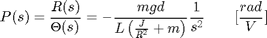
The design criteria for this problem are:
- Settling time less than 3 seconds
- Overshoot less than 5%
To see the derivation of the equations for this problem refer to the Ball & Beam: System Modeling page.

Open-loop bode plot
The main idea of frequency based design is to use the Bode plot of the open-loop transfer function to estimate the closed-loop response. Adding a controller to the system changes the open-loop Bode plot, therefore changing the closed-loop response. Let's first draw the bode plot for the original open-loop transfer function. Create a new m-file with the following code and then run it in the MATLAB command window. You should get the following Bode plot:
m = 0.111;
R = 0.015;
g = -9.8;
L = 1.0;
d = 0.03;
J = 9.99e-6;
s = tf('s');
P_ball = -m*g*d/L/(J/R^2+m)/s^2;
bode(P_ball)
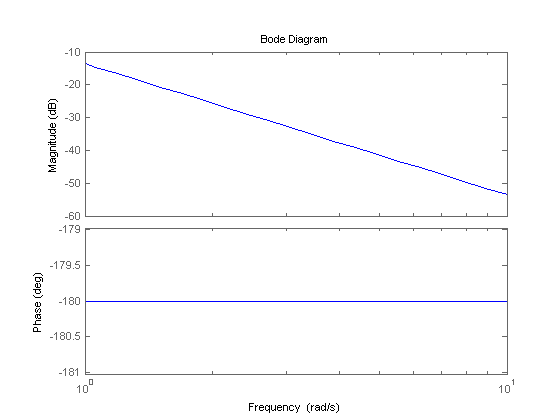 From this plot we see that the phase margin is zero. Since the phase margin is defined as the change in open-loop phase shift necessary to make a closed-loop system unstable this means that our zero phase margin indicates our system is unstable. We want to increase the phase margin and we can use a lead compensator controller to do this. For more information on Phase and Gain margins please refer to the Introduction: Frequency Domain Methods for Controller Design page.
Phase-lead controller
A first order phase-lead compensator has the form given below:
(2)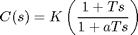
The phase-lead compensator will add positive phase to our system over the frequency range 1/aT and 1/T, which are called the corner frequencies. The maximum added phase for one lead compensator is 90 degrees. For our controller design we need a percent overshoot of less than 5 %, which corresponds to a 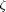 of 0.7. Generally * 100 will give you the minimum phase margin needed to obtain your desired overshoot. Therefore we require a phase margin greater than 70 degrees.
To obtain "T" and "a", the following steps can be used.
1. Determine the positive phase needed: We need at least 70 degrees from our controller.
2. Determine the frequency where the phase should be added (center frequency): In our case this is difficult to determine because the phase vs. frequency graph in the bode plot is a flat line. However, we have a relation between bandwidth frequency ( ) and settling time which tells us that is approximately 1.92 rad/s. Therefore we want a center frequency just before this. For now we will choose 1.
3. Determine the constant "a" from the equation below: this determines the required space between the zero and the pole for the maximum phase added.
(3)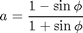
where phi refers to the desired phase margin. For 70 degrees, a = 0.0311.
% 4. Determine "T" and "aT" from the following equations:
(4)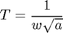
(5)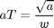
For 70 degrees and center frequency (w) = 1, aT = 0.176 and T = 5.67
Now, we can add our lead controller to the system and view the bode plot. Remove the bode command from your m-file and add the following. You should get the following bode plot:
phi=70*pi/180; a=(1-sin(phi))/(1+sin(phi)); w=1; T=1/(w*sqrt(a)); K = 1; C = K*(1+T*s)/(1+a*T*s); bode(C*P_ball)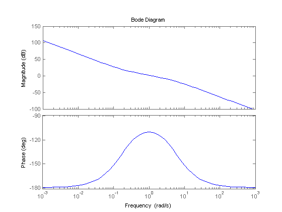
You can see that our phase margin is now 70 degrees. Let's check the closed-loop response to a step input of 0.25m. Add the following to your m-file. You should get the following plot:
sys_cl = feedback(C*P_ball,1); t = 0:0.01:5; step(0.25*sys_cl,t)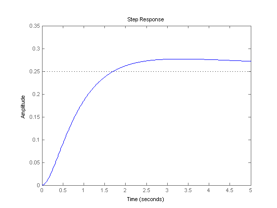
Although the system is now stable and the overshoot is only slightly over 5%, the settling time is not satisfactory. Increasing the gain will increase the crossover frequency and make the response faster. With k = 5, your response should look like:
K = 5; C = K*(1+T*s)/(1+a*T*s); sys_cl = feedback(C*P_ball,1); bode(C*P_ball) step(0.25*sys_cl,t)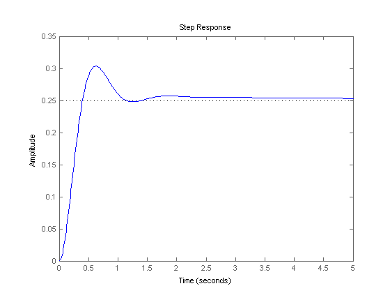
The response is faster, however, the overshoot is much too high. Increasing the gain further will just make the overshoot worse.
Adding more phase
We can increase our phase-lead compensator to decrease the overshoot. Create an m-file and copy the following code from your web-browser into it:
pm = 80; w = 1; K = 1; %view compensated system bode plot pmr = pm*pi/180; a = (1 - sin(pmr))/(1+sin(pmr)); T = sqrt(a)/w; aT = 1/(w*sqrt(a)); C = K*(1+aT*s)/(1+T*s); figure bode(C*P_ball) %view step response sys_cl = feedback(C*P_ball,1); t = 0:0.01:5; figure step(0.25*sys_cl,t)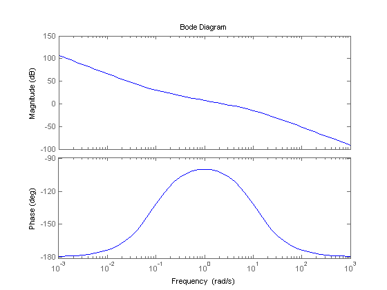 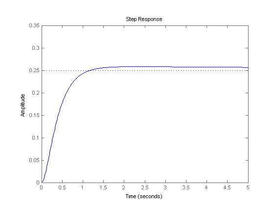
The overshoot is fine but the settling time is just a bit long. Try different numbers and see what happens. Using the following values the design criteria was met.
pm = 85; w = 1.9; K = 2; %view compensated system bode plot pmr = pm*pi/180; a = (1 - sin(pmr))/(1+sin(pmr)); T = sqrt(a)/w; aT = 1/(w*sqrt(a)); C = K*(1+aT*s)/(1+T*s); figure bode(C*P_ball) %view step response sys_cl = feedback(C*P_ball,1); t = 0:0.01:5; figure step(0.25*sys_cl,t)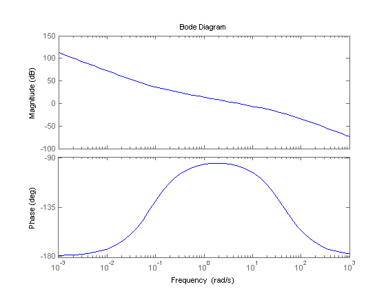 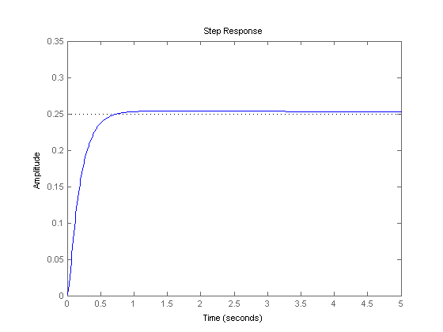
Note: A design problem does not necessarily have a unique answer. Using this method (or any other) may result in many different compensators. For practice you may want to go back and change the added phase, gain, or center frequency.